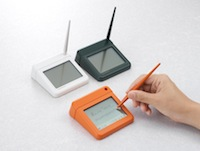

キングジム、「デジタル名刺ホルダー」と「デジタル卓上メモ」を発表 34
ストーリー by hylom
そろそろ紙での名刺交換とかいらないんじゃないだろうか 部門より
そろそろ紙での名刺交換とかいらないんじゃないだろうか 部門より
あるAnonymous Coward 曰く、
キングジムが新たなデジタルガジェット2製品を発表した（ITmediaの記事）。デジタル名刺ホルダー「ピットレック」と、デジタル卓上メモ「マメモ」（ピットレックのニュースリリース、マメモのニュースリリース）。
ピットレックは小型カメラとOCR、液晶ディスプレイを内蔵した、名刺ケースより一回り大きいサイズのガジェット。カメラで名刺を撮影して取り込みOCRでテキストデータ化して管理できるという。価格は2万7,300円。
マメモは159×256ピクセルのモノクロ液晶ディスプレイに、タッチペンで手書きでメモを書けるデバイスとのこと。価格は6,279円。

そういえば (スコア:2, おもしろおかしい)